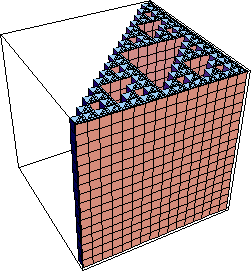

| We select cubes of side lengths 1/2, 1/4,
1/8, ... , 1/2n, ... noting the scaling
of the gasket. |
| Each square covering part of the gasket is the top face of cube covering part
of the product. |
| For cubes of side length 1/2n, each cube covering part of the top face gasket
is the top of a column of 2n cubes covering the product. |
|  |
| Because we need 3n squares of side 1/2n to
cover the gasket, we need 3n⋅2n cubes of side length
1/2n to cover the product. That is, |
| N(1/2n) = 3n⋅2n |
| |
| Knowing N(1/2n) we can compute the box-counting dimension: |
| d | = limn→∞Log(N(1/2n)) / Log(1/(1/2n)) |
| = limn→∞Log(3n⋅2n) / Log(2n) |
| = limn→∞( Log(3n) / Log(2n) + Log(2n) / Log(2n) ) |
| = (Log(3) / Log(2)) + 1 |
|